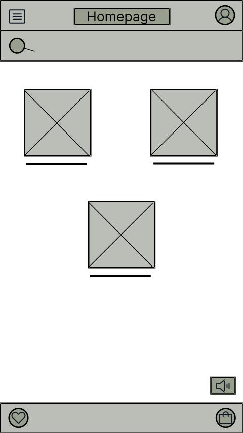
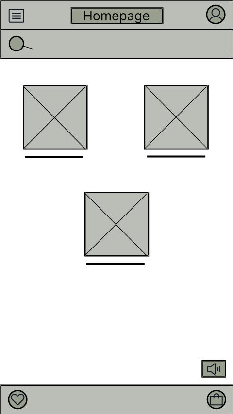

French patisserie
Případová studie
Aplikace na objednávání jídla
Toto je můj první projekt na kterém jsem pracovala v rámci Google UX Design Certificate kurzu. Téma bylo náhodně vygenerováno a úkolem bylo vytvořit fiktivní jednoduchou mobilní aplikaci na objednávání a doručování jídla pro Francouzskou cukrárnu, která by měla být použitelná i pro uživatele se zrakovým postižením. A taktéž by měla obsahovat i sekci s oblíbenými produkty.

.jpg)

Uživatel
Uživatelem této aplikace je člověk všech věkových kategorií s nabitým rozvrhem. Nemá mnoho času na vaření a často dává přednost objednávání jídla přes aplikace, nebo webové stránky. Pro tohoto uživatele je důležitá kvalita služby i produktu.
Výzkum
Prvním bodem byl výzkum na jehož základě jsem vytvořila Persony, a určila Pain points.
- uživatelé se cítí v aplikacích ztraceni, je příliš složitá, nebo plná reklam a zbytečných funkcí
- postrádají seznam oblíbeného zboží, nebo funkci díky které mohou opětovně vložit do košíku svůj typický nákup
- aplikace velmi často nejsou vybaveny čtečkou obrazovky

Wireframe a testování
Následovaly wireframy vytvořené v programu Figma, které jsem použila k vytvoření low-fidelity prototypu a následně jej testovala na uživatelích.
 

Výsledky testování
- 3 z 5 respondentů by uvítalo rychlejší vkládání zboží do košíku, bez nutnosti rozklikávání detailu produktu
- 3 z 5 testovaných uvedlo, že by bylo pohodlnější mít v nákupním košíku u množství zboží spíše tlačítka + a - než přepisování číslice.
- dále 2 z 5 účastníků by také potřebovalo více informací o doručení zboží, čas, způsob atd. Stejný počet respondentů také uvedlo, že pokud má být aplikace dostupná všem, měla by být ve více než jednom jazyce.
High-fidelity prototyp a druhé testování
Na základě výsledků z předchozího testování jsem provedla změny a vytvořila High-fidelity prototyp aplikace.
Následovalo druhé kolo testování. Pozitivním zjištěním bylo, že kroky a cesta uživatele v aplikaci se zdála být logická.
- všem uživatelům se aplikace zdála příliš nepřehledná
- všem uživatelům se aplikace zdála málo kontrastní
- 2 z 5 uživatelů chybělo více informací o množství produktu a alergenech
Na základě těchto poznatků jsem provedla změny

Následovné změny byly v režii co největšího zjednodušení stránky, odstranění rušivého pozadí, které bylo nahrazeno jednoduchým bílým a změna písma. Snažila jsem se také o více kontrastní tmavě hnědá tlačítka.
Cojsem se naučila na tomto projektu?
Především, že méně je více, na čemž stále pracuji :) Potom první setkání s programem Figma, takže velkým přínosem je, že jsem se naučila pracovat s tímto nástrojem. Taktéž jsem si vyzkoušela testování na uživatelích a změny designu na základě zpětné vazby.
Dozvěděla jsem se spoustu nových poznatků a nápadů, které by mně jako tvůrce prototypu nebýt testování vůbec nenapadly.
Co s tím dál?
Samozřejmě se jedná o můj první prototyp, takže vypadá tak jak vypadá, ale s každou další verzí je míň a míň ošklivý. Aplikace by mohla být v budoucnu i ve více jazycích a mít i tmavý režim.